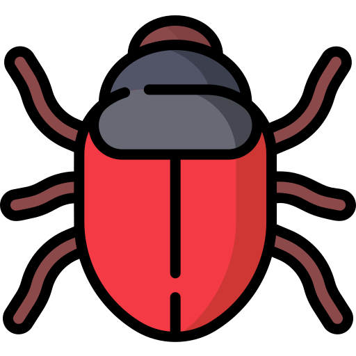

Hi, I'm Guy Levy
QA Student
"Bug Hunter" 
Welcome To My Website
About Me


I'm 43 years old from Tel Aviv. I have a beautiful Doberman, his name is Justin.
The gym is my happy place! I love getting a workout in every single day. Taking care of my health is a core value for me. I strive to eat well, exercise regularly, and get enough sleep.
As a former flight attendant, I had the amazing opportunity to travel the world and witness some of the most magnificent sights. Out of all the places I've traveled to, Bangkok, New York, and Madrid really stood out to me.
Contact MeProfessional Experience


My SEO background has equipped me with a strong attention to detail, enabling me to identify even the smallest defects that impact user experience and search engine visibility.
My experience in SEO has honed my problem-solving skills, allowing me to effectively identify and address issues that hinder website performance and user satisfaction.
I'm adept at identifying and troubleshooting website issues, which translates well to the world of QA testing. I'm confident that my ability to analyze user experience (UX) would be valuable in ensuring software functionality meets user needs.
Why QA

I'm a big believer in self-directed learning, and online tutorials have become my go-to resource for acquiring new tech skills. They allow me to explore at my own pace and delve deep into specific areas that pique my interest.
But my true passion lies in QA and debugging code. There's something incredibly satisfying about untangling complex issues and ensuring everything functions smoothly. Debugging code is like solving a puzzle for me. I love the intellectual challenge of working through problems and finding elegant fixes.
I'm a highly organized and detail-oriented individual with a strong emphasis on thoroughness in my work.
Add me to your team